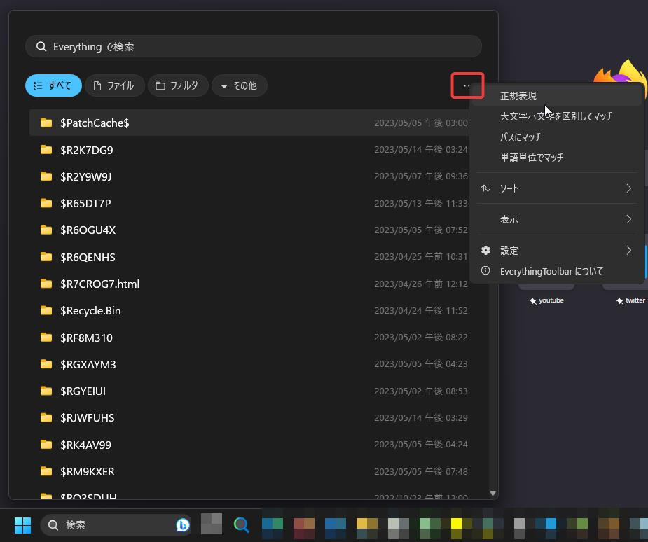
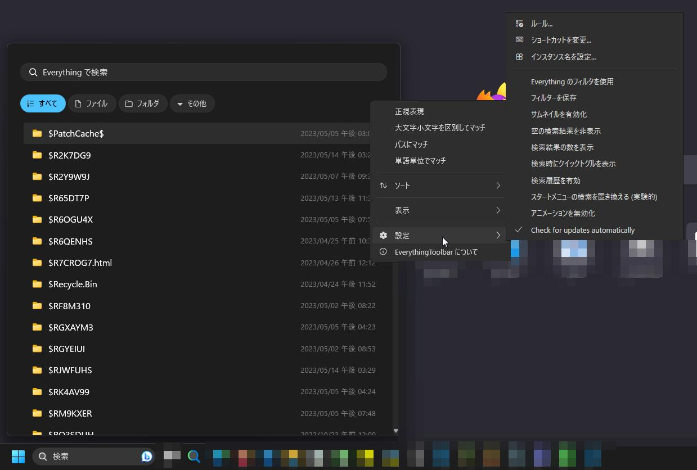

EverythingToolbar
ツールバーに固定できツールバーで検索できるツールバー
検索もエクスプローラーやwindowsのツールバーで検索はできますが
ツールバーの方は早いですがちょっと見づらいですし、
ぶっちゃけEverythingToolbarを使った方が個人的に好きです
全体
詳細画面（赤い部分をクリック）

設定画面

並び替え画面
元となるEverythingを入れてからdownloadしてください。
ダウンロードしてない場合は
ここから
ダウンロードしてください。
ダウンロードはここから！